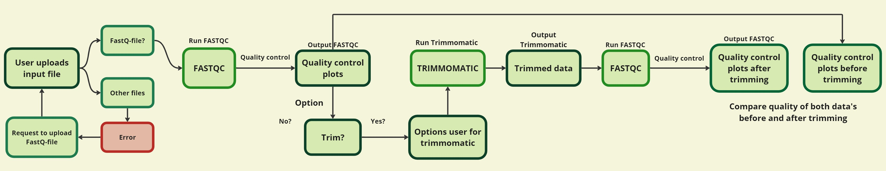

FLOWCHART
 The user uploads a FastQ-file to the website. The website checks if the input is valid
(a FastQ-file) if this is not the case, the user will be sent to an error page and get the
request to upload a FastQ-file.
If the user has uploaded a FastQ-file, the tool FASTQC starts the quality control for the uploaded data.
The results of the quality control will be shown in different plots. The user can choose to trim the data based on quality control, but this is unnecessary
if the data is already in good quality.
When the user chooses to trim the data, the user can choose the values of crop, minlen, etc.
The data will be trimmed and sent to FASTQC to execute quality control for the second time. After the quality control is executed, the plots of the original data (the one before
trimming) and the new data (the one after trimming) will be shown next to each other to compare the quality
of the data.